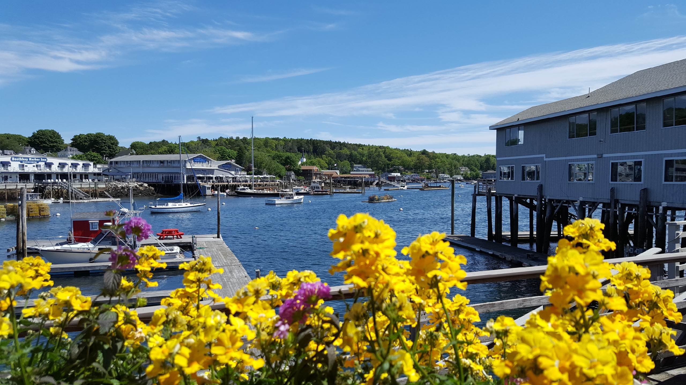
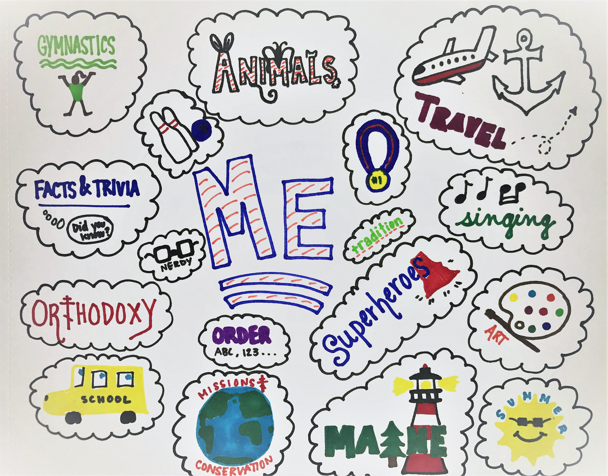

BACKGROUND
My name is Fiona Sterling. I'm from a small town in Maine originally, but moved to Massachusetts in 2012 for college. I attended Hellenic College in Brookline, majoring in Management and Leadership. From there, I went on to Lesley University to get my Master's in Education. I worked at a small, private elementary school last year as a floating teacher. On the side, I also coach gymnastics, which is one of my favorite things to do! I teach recreational classes and coach team. I've been coaching gymnastics for around 5 years now.
WHY I WANT TO BE A WEB DEVELOPER
Throughout college, I had a hard time figuring out what career I wanted to do. I majored in Management and Leadership because I thought it would give me a solid background for whatever career path I chose. I got my Master's in Education, thinking that classroom teaching might be a good path for me since I loved coaching. I worked in elementary schools for two years, but I felt like I wasn't using my skills in the way I wanted. This past year I've been doing a lot of reflecting about what kinds of things are important to me when it comes to a job. I tend to be a very focused person, who when working on a project, can sit for hours without realizing any time has passed. I also realized that I like a challenge, and can really focus on the details of a task or a project. I decided that I wanted a career that there were opportunities in as well - an area that the demand was getting higher over time. I mentioned these things to people I am close to, and someone mentioned coding. I had worked with tech pretty minimally, so I didn't know if I would be able to do it. I started going through a bit of an online class for Python, and I discovered that it was actually quite enjoyable! I felt like I was really being challenged (and also doing something super cool!). So, now I'm here at Coding Temple to learn how to code and to (hopefully!) become a web developer. A year ago I could not have imagined this at all.